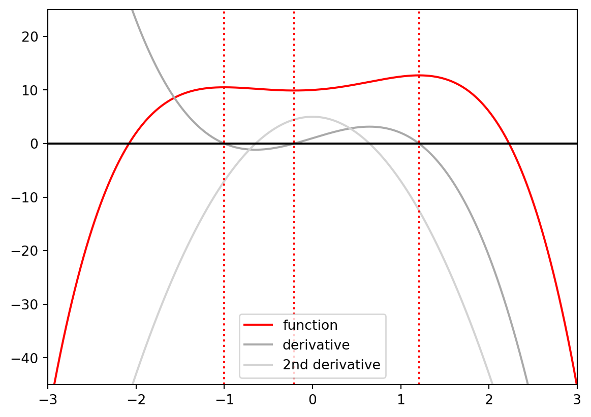
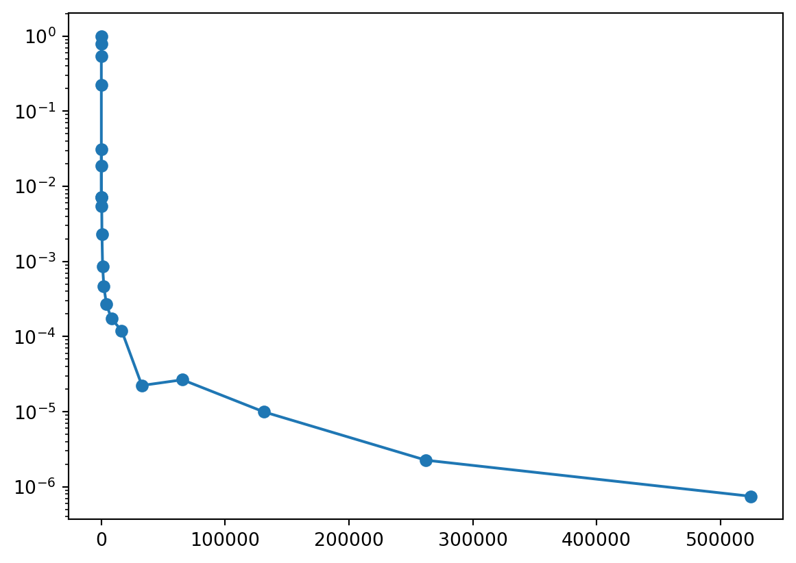
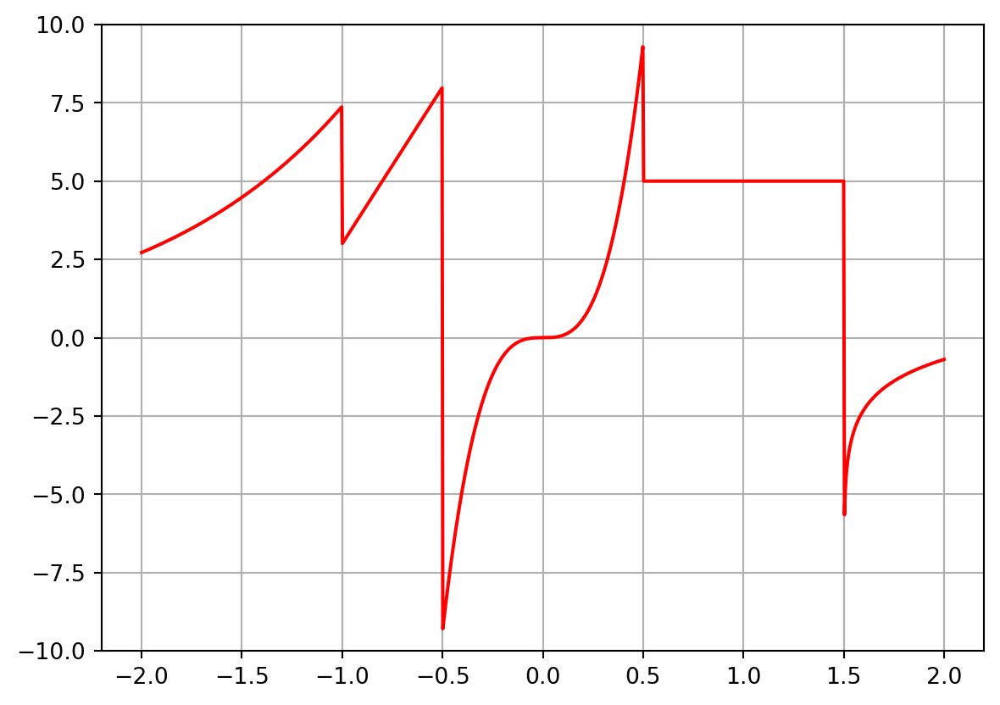

import numpy as np import matplotlib.pyplot as pltdef func(x): result =-(x**4) +2.5* (x**2) + x +10return resultdef d1_func(x): result =-4* (x**3) +5* x +1return resultdef d2_func(x): result =-12* (x**2) +5return resultcritical_values = [-1.0,0.5-1/ np.sqrt(2),0.5+1/ np.sqrt(2),]xd = np.linspace(-3, 3, 10000)plt.plot(xd, func(xd), label="function", c="red")plt.plot(xd, d1_func(xd), label="derivative", c="darkgrey")plt.plot(xd, d2_func(xd), label="2nd derivative", c="lightgrey")plt.plot([plt.xlim()[0], plt.xlim()[1]], [0, 0], c='black')plt.grid(False)plt.legend()plt.xlim(left=-3.0, right=3.0)plt.ylim(bottom=-45, top=25)bottom, top = plt.ylim()for critical_value in critical_values: plt.plot( [critical_value, critical_value], [bottom, top], linestyle=":", c="red", )plt.ion()plt.show()

Next, let’s try the newton method we have introduced before:
def newton(fun, grad, x0, tol=1e-6, maxiter=100, callback=None):""" This finds the root of function fun (the first argument) using the newton method, with initial guess x0 and given tolerance and maximum number of iterations. Input arguments: fun: function of interest grad: the first derivative of func x0: initial guess tol: tolerance maxiter: maximum number of iterations callback: a function that will be invoked at each iteration if given """for i inrange(maxiter): x1 = x0 - fun(x0) / grad(x0) x_bar = (x1 + x0) /2 err = fun(x_bar)if callback isnotNone: callback( cb_arg_fun=fun, cb_arg_grad=grad, cb_arg_x0=x0, cb_arg_x1=x1, cb_arg_x_bar=x_bar, cb_arg_iter=i, )ifabs(err) < tol:breakelse: x0 = x1else:raiseRuntimeError(f"Failed to converge in {maxiter} iterations." )return x_bardef print_step( cb_arg_fun, cb_arg_grad, cb_arg_x_bar, cb_arg_iter, **kwargs):print(f"Iteration {cb_arg_iter+1:<1d}: \nx_bar={cb_arg_x_bar:<1.20f}\nfunction value at x_bar={cb_arg_fun(cb_arg_x_bar):<1.20f}\ngradient at x_bar={cb_arg_grad(cb_arg_x_bar):<1.20f}\n" )x_bar_list = []for initial_guess in [0.5, -0.5, 1.0]: x_bar = newton( fun=d1_func, grad=d2_func, x0=initial_guess, callback=print_step ) x_bar_list.append(x_bar)print(x_bar_list)
Iteration 1:
x_bar=-0.25000000000000000000
function value at x_bar=-0.18750000000000000000
gradient at x_bar=4.25000000000000000000
Iteration 2:
x_bar=-1.00000000000000000000
function value at x_bar=0.00000000000000000000
gradient at x_bar=-7.00000000000000000000
Iteration 1:
x_bar=-0.25000000000000000000
function value at x_bar=-0.18750000000000000000
gradient at x_bar=4.25000000000000000000
Iteration 2:
x_bar=-0.10000000000000000555
function value at x_bar=0.50400000000000000355
gradient at x_bar=4.87999999999999989342
Iteration 3:
x_bar=-0.20353982300884956858
function value at x_bar=0.01603025025348303600
gradient at x_bar=4.50285848539431476922
Iteration 4:
x_bar=-0.20709321339815162100
function value at x_bar=0.00006085580607451124
gradient at x_bar=4.48534881157313147781
Iteration 5:
x_bar=-0.20710678098257578883
function value at x_bar=0.00000000091487062370
gradient at x_bar=4.48528137525242431849
Iteration 1:
x_bar=1.14285714285714279370
function value at x_bar=0.74344023323615182619
gradient at x_bar=-10.67346938775510167829
Iteration 2:
x_bar=1.24955786991550388265
function value at x_bar=-0.55642364317764325676
gradient at x_bar=-13.73673844321325532292
Iteration 3:
x_bar=1.21027684969081650301
function value at x_bar=-0.03972489211499663497
gradient at x_bar=-12.57724063477032672154
Iteration 4:
x_bar=1.20712951442467741892
function value at x_bar=-0.00028383836064183043
gradient at x_bar=-12.48593997514188913556
Iteration 5:
x_bar=1.20710678238549595775
function value at x_bar=-0.00000001496920809529
gradient at x_bar=-12.48528140897278149168
[-1.0, -0.2071067809825758, 1.207106782385496]
Next, try the grid search method:
def grid_search(fun, bounds=(0, 1), n_grid=10):""" Grid search between bounds over given number of points. """ x_grid = np.linspace(*bounds, n_grid) y_grid = fun(x_grid) max_index = np.argmax(y_grid)return x_grid[max_index]b0, b1 =-2, 2x_bar = grid_search(fun=func, bounds=(b0, b1), n_grid=10)closest_cv = critical_values[np.argmin(np.abs(critical_values - x_bar))]print(f"Grid search returned {x_bar =:<1.20f},\nwhich is closest to critical point {closest_cv:<1.5f}, difference = {abs(x_bar - closest_cv):<1.3e}.")
Grid search returned x_bar = 1.11111111111111071637,
which is closest to critical point 1.20711, difference = 9.600e-02.
Finally, let’s increase n_grid and see how does the increase affect the solution accuracy:
data = {'n': [2**i for i inrange(20)]}data['err'] = np.empty(shape=len(data['n']))for i, n inenumerate(data["n"]): x_bar_gridn = grid_search(fun=func, bounds=(b0, b1), n_grid=n) closest_cv_gridn = critical_values[ np.argmin(np.abs(critical_values - x_bar_gridn)) ] data["err"][i] = np.abs(x_bar_gridn - closest_cv_gridn)plt.plot(data["n"], data["err"], marker="o")plt.yscale("log")plt.ion()plt.show()

2 Another Example
Let’s consider the following objective function to be maximized.
def f(x): x = np.asarray(x)if x.size ==1: x = x[np.newaxis] res = np.empty(shape=x.shape)for i, ix inenumerate(x):if ix <=-1: res[i] = np.exp(ix +3)elif-1< ix <=-0.5: res[i] =10* ix +13elif-0.5< ix <=0.5: res[i] =75* ix**3elif0.5< ix <=1.5: res[i] =5.0else: res[i] = np.log(ix -1.5)return resxd = np.linspace(-2,2,1000)plt.plot(xd,f(xd),label='function',c='red')plt.ylim((-10,10))plt.grid(True)plt.show()

2.1 Why is this hard
Any function with cases is usually nasty
Kinks are non-differentiable points, which causes trouble for Newton method.
Discontinuities are troubles for existence of either roots or maximum (think \(1/x\) which illustrates both cases).
Multiple local optima are troubles for non-global methods.
Regions where the function is completely flat will likely trigger the stopping criterion, which causes trouble for convergence.
In this case, discretization and grid search may be the only option!
2.2 Examples of having to work with hard cases
Economic model may have discontinuities and/or kinks.
Estimation procedure may require working with piecewise flat and/or discontinuous functions.
The function at hand may be costly to compute or unclear in nature (or subject of the study).
Robustness checks over special parameters (categorical variables, assumptions, etc).